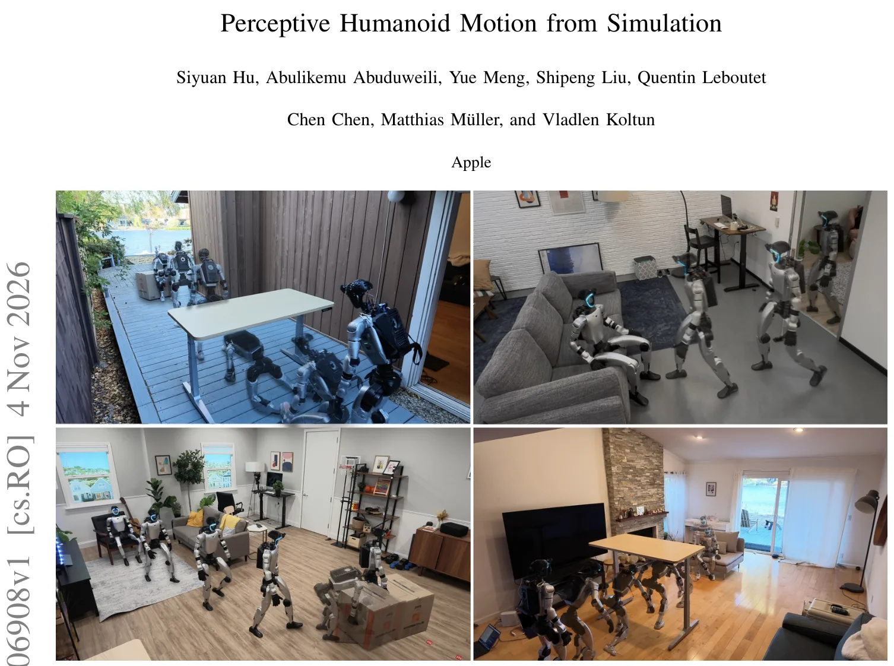
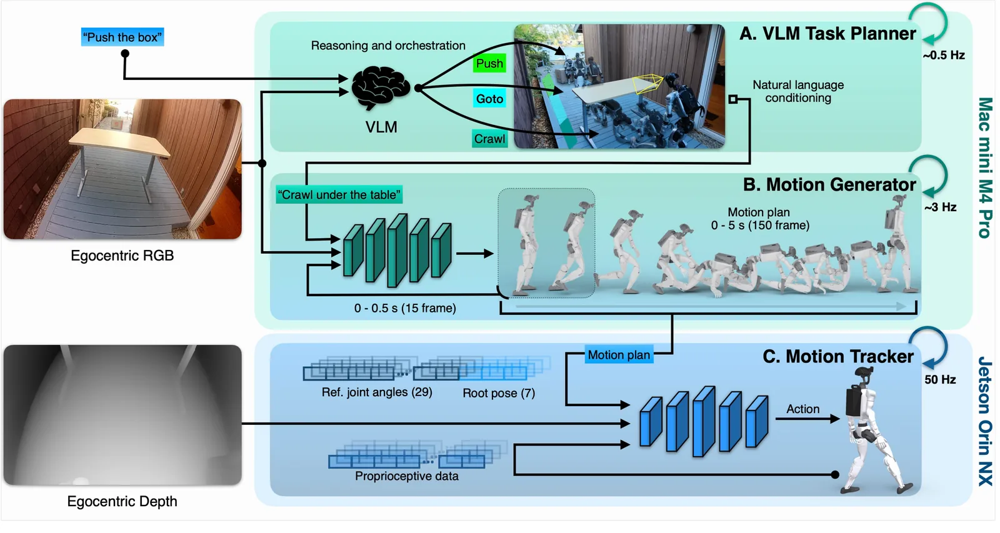
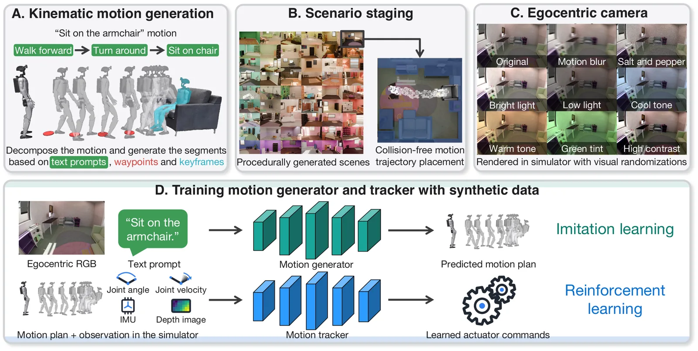
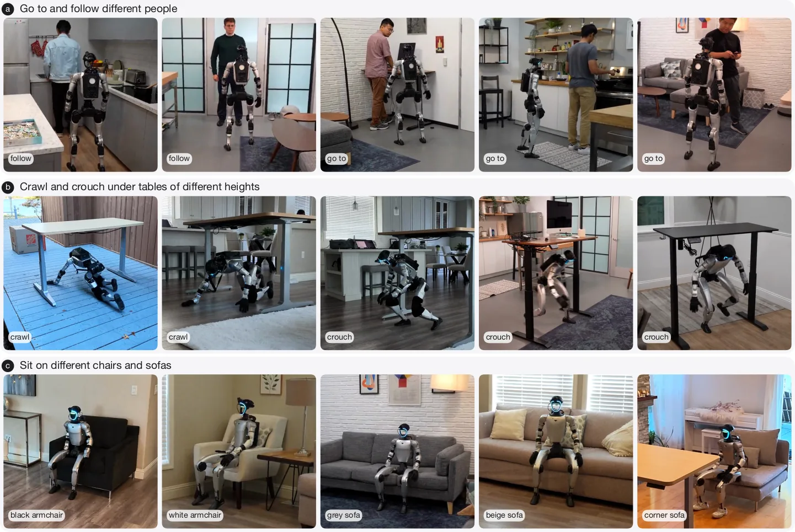

O Gargalo de Dados na Robótica Humanóide
Robôs humanóides têm a capacidade física de realizar tarefas complexas, mas sua autonomia geral esbarra em um problema fundamental: a escassez de dados. Para que um robô execute ações úteis em ambientes não estruturados, como uma sala de estar desconhecida, ele precisa mapear pixels e linguagem natural para comandos de juntas de baixo nível. Isso exige supervisão pareada: cada imagem egocêntrica deve estar vinculada à instrução de linguagem e à trajetória motora exata que a satisfaz.
Abordagens tradicionais dependem de teleoperação humana ou dispositivos de captura vestíveis. O custo é proibitivo: uma hora de demonstração de dados requer pelo menos uma hora de trabalho humano físico. Isso cria um gargalo de escala. Enquanto textos e vídeos são abundantes como subprodutos da atividade humana, trajetórias corporais completas com contexto visual são raras e difíceis de produzir em massa.
Este paper introduz o HALO (Humanoid Autonomy, Learned in simulation, running Onboard), um sistema de autonomia que elimina o operador humano do loop de coleta de dados. Em vez de depender de labor de mão de obra, o HALO utiliza um pipeline de geração de dados em simulação que escala com poder computacional. O objetivo é criar uma política de controle que funcione a bordo do robô físico, sem necessidade de escaneamento prévio do ambiente ou mapeamento externo.

Arquitetura de Autonomia em Três Camadas
O sistema HALO é composto por uma stack de autonomia dividida em três camadas distintas, cada uma operando em frequências diferentes para equilibrar planejamento de alto nível com controle de baixo nível. A camada mais externa é um orquestrador baseado em um Modelo de Linguagem e Visão (VLM). Este modelo processa a solicitação de linguagem natural e a entrada visual egocêntrica a uma taxa de aproximadamente 0,5 Hz. Sua função é decompor o pedido complexo em uma sequência de subtarefas, identificando a habilidade física necessária e o objeto alvo.
Na camada intermediária, o gerador de movimento opera a 3 Hz. Ele combina um codificador baseado em VLM com um decodificador baseado em DiT (Diffusion Transformer). O gerador mapeia a subtarefa ativa e os frames RGB egocêntricos para um plano de movimento cinemático de corpo inteiro. Este plano consiste em uma trajetória de 5 segundos, especificando 29 ângulos de juntas e a pose relativa da pelve por frame, totalizando 36 valores por passo de tempo.
Finalmente, a camada de rastreamento de movimento executa o plano na hardware físico a 50 Hz. O rastreador é um controlador aprendido que utiliza o plano de referência junto com dados de profundidade egocêntrica e propriocepção para emitir comandos de atuador nas juntas. Esta camada é crucial para garantir que o movimento gerado sinteticamente seja executado com precisão no mundo real, corrigindo discrepâncias entre o modelo e a física física.

Geração Sintética de Dados sem Humanos
A inovação central do HALO reside na geração de dados de treinamento. O pipeline utiliza o gerador procedural INFINIGEN para criar 1.000 ambientes distintos, incluindo salas de estar, escritórios e quartos, com tamanhos e móveis variados. Diferente de pipelines baseados em reconstrução 3D, esta abordagem não requer escaneamento físico ou anotação manual de ativos. A diversidade ambiental escala com o poder computacional, não com o tempo humano.
Para criar um episódio de treinamento, o sistema decompõe a tarefa em segmentos de movimento. Cada segmento é parametrizado por um prompt de texto, pontos de passagem (waypoints) e uma pose-chave terminal que define a interação com o objeto. Por exemplo, a tarefa 'sentar na poltrona' é dividida em 'andar para frente', 'virar' e 'sentar'. Waypoints guiam o robô até a frente do assento, enquanto o segmento final força uma pose sentada ancorada ao ativo alvo.
O movimento é sintetizado pelo modelo KIMODO, um modelo de difusão cinemático. O KIMODO gera movimentos densos para cada segmento individual, que são então costurados em uma trajetória global contínua. No entanto, como o KIMODO opera puramente no domínio cinemático, as trajetórias podem ser fisicamente irrealizáveis, apresentando artefatos como deslizamento de pés ou penetração no chão. Para mitigar isso, o sistema gera N candidatos por segmento e os pontua usando verificadores geométricos de cinemática direta.
Renderização e Treinamento em Escala
Após a geração da trajetória e o posicionamento seguro no ambiente procedural (garantindo colisões zero entre a trajetória cinemática, os móveis e o robô), o sistema procede para a renderização egocêntrica. As trajetórias são reproduzidas cinematicamente nas cenas geradas, renderizando a visão do robô através de uma câmera simulada. Esta etapa decupla a geração de movimento da renderização: o corpus pode ser renderizado em novas resoluções ou com diferentes intrínsecos de câmera sem a necessidade de regenerar o movimento subjacente.
O corpus de treinamento final compreende 300 horas de episódios. A síntese destes dados requer 48 horas de operação em 250 GPUs H100, sem intervenção humana. O gerador de dados é treinado em 64 GPUs B200, enquanto o rastreador de movimento utiliza 4 GPUs H100. A escala de dados é determinada exclusivamente pela capacidade computacional disponível, removendo o gargalo de mão de obra humana que limita outras abordagens.

Implementação no Hardware Real
O sistema foi implementado no robô Unitree G1, com duas modificações físicas: um suporte de cabeça personalizado carregando uma câmera OAK-1W e uma caixa traseira contendo um Mac mini M4 Pro com 64 GB de RAM. A percepção e o controle são distribuídos entre essas duas máquinas em um cascade assíncrono totalmente sem fio, conectado via ZeroMQ.
No loop externo, a câmera OAK-1W transmite um fluxo RGB de 120 graus (1280x800, 30 fps) para o Mac mini. Aqui, o orquestrador e o gerador de movimento calculam a trajetória de referência cinemática. Esta trajetória serve como ponto de ajuste para o loop de controle interno, que roda no Jetson Orin NX do próprio robô. O rastreador consome o plano junto com um fluxo de profundidade voltado para baixo (Intel RealSense D435i) para emitir comandos de baixo nível.
Avaliação e Resultados Zero-Shot
A avaliação do HALO mede a capacidade de executar tarefas em ambientes que nunca apareceram durante o treinamento. Seis tarefas foram testadas: GO-TO (andar até um objeto nomeado), SIT (sentar em uma cadeira), DOOR (passar lateralmente por uma porta entreaberta), CROUCH e CRAWL (passar sob um obstáculo baixo) e PUSH (empurrar uma caixa). Cada tarefa foi avaliada em 100 ambientes simulados e 6 ambientes do mundo real, com 10 tentativas por tarefa por ambiente.

Taxas de Sucesso e Generalização
Os resultados mostram uma transferência zero-shot impressionante. Na avaliação de tarefa única, o HALO alcançou uma taxa de sucesso média de 91% tanto na simulação quanto no mundo real. Especificamente, o robô obteve 92% de sucesso no GO-TO, 85% no SIT, 93% no DOOR, 100% no CROUCH, 90% no CRAWL e 88% no PUSH. A consistência entre o desempenho simulado e real sugere que o gap de simulação foi efetivamente minimizado pelo pipeline de verificação e pela diversidade procedural dos dados de treinamento.
Limitações e Trabalho Futuro
Apesar dos resultados promissores, o paper reconhece limitações significativas. Primeiro, embora a coleta de dados seja automatizada, o design de tarefas ainda requer intervenção humana. Adicionar uma nova tarefa física exige que uma pessoa escreva o prompt e autorize as poses-chave da sequência de movimento. O repertório do robô cresce apenas na velocidade que um humano pode especificar novas tarefas.
Limitações Sensoriais e de Controle
Segundo, a entrada sensorial do robô é baseada principalmente na visão, que não fornece percepção direta de contato. Uma vez que um objeto sai do campo de visão da câmera ou é ocluído, a política não tem sinal de que o objeto ainda está lá, o que degrada o desempenho em tarefas ricas em contato. A adição de sensores táteis seria uma solução natural para este problema.
Conclusão
O paper demonstra que a simulação pode servir como o motor de dados para a autonomia humanóide, removendo o operador humano do loop de coleta e desvinculando a geração de dados do trabalho físico. O sistema HALO transfere zero-shot para ambientes reais não vistos durante o treinamento, sem necessidade de escaneamento ou mapeamento prévio. A abordagem escala com compute, oferecendo um caminho viável para a generalização em robótica, embora desafios permaneçam na expansão automática do repertório de tarefas e na percepção de contato.
O que fica
- HALO elimina a necessidade de dados reais capturados por humanos, usando simulação procedural para gerar 300 horas de treinamento.
- O sistema alcança 91% de sucesso em tarefas únicas no mundo real, transferindo zero-shot da simulação para o físico.
- A arquitetura usa um VLM para planejamento, um gerador de movimento cinemático e um rastreador aprendido para execução.
- Limitações incluem a dependência humana para design de novas tarefas e a falta de percepção direta de contato.
Paper original: Perceptive Humanoid Motion from Simulation
Comentários
Nenhum comentário ainda. Seja o primeiro.